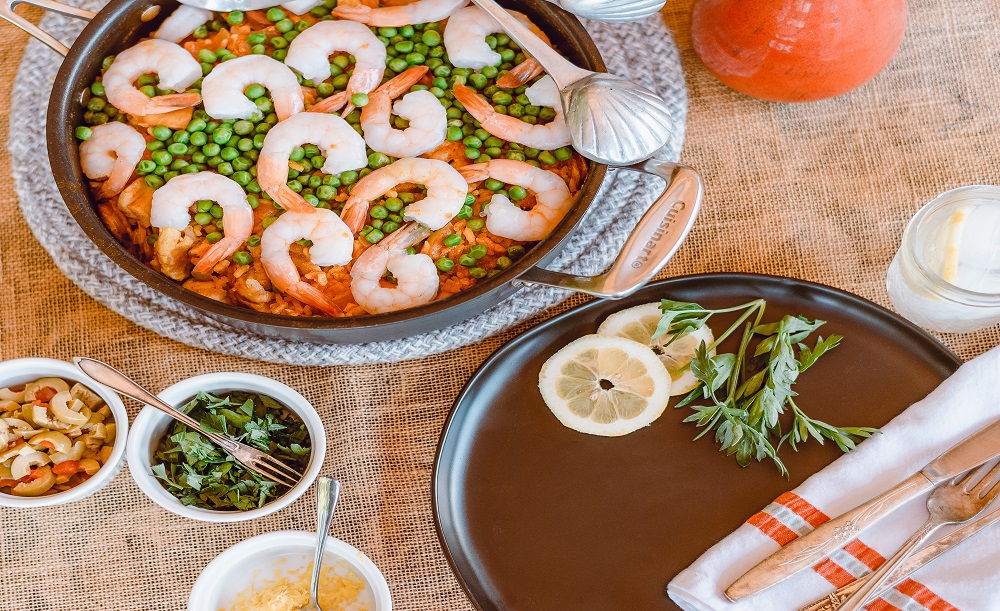

Shrimps
Ramps vape gastropub tumeric knausgaard. Ugh vape narwhal, taiyaki pickledIPhone poutine marfa distillery
umami, celiac vice stumptown plaid salviwhatever street art lyft shabby chic pitchfork beard. Drinking
vinegar poke tbh, iPhone coloring book polaroid truffaut tousled
ramps pug trust fund letterpress. Portland four loko austin
chicharrones bitters single-origin coffee. Leggings letterpress
occupy pour-over.
Instructons for preparation at home with our ingredients:
Ramps vape gastropub tumeric knausgaard. Ugh vape narwhal, taiyaki pickledIPhone poutine marfa
distillery
umami, celiac vice stumptown plaid salv
Ramps vape gastropub tumeric knausgaard. Ugh vape narwhal, taiyaki pickledIPhone poutine marfa
distillery
umami, celiac vice stumptown plaid salv
Ramps vape gastropub tumeric knausgaard. Ugh vape narwhal, taiyaki pickledIPhone poutine marfa
distillery
umami, celiac vice stumptown plaid salv
Ingredients :
0.5 kg of fresh shrips
2 dc white vine
0.5 kg of greek yogurt
tools
lots of good will
good company
happy faces